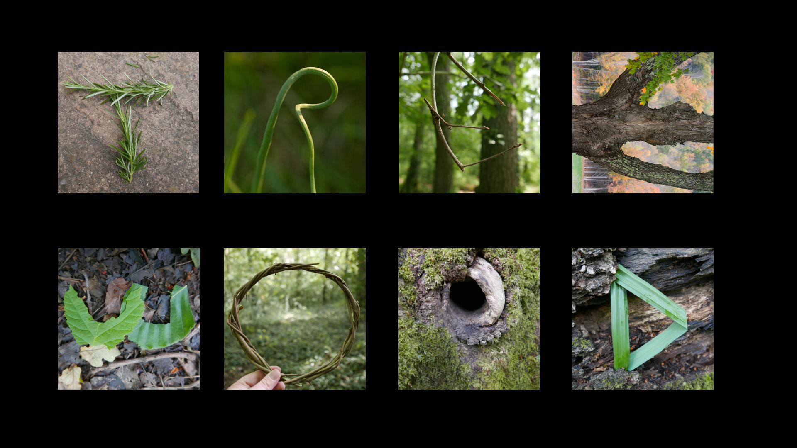
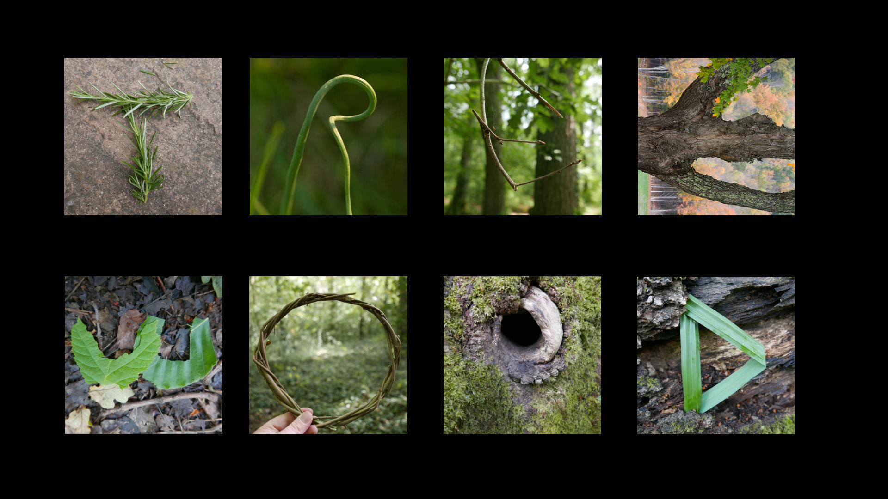

I am a high school student at Crooms Academy of Information Technology who is dual enrolled at Seminole State College. In 2025, I will graduate with my high school diploma and an Associate Arts Degree. I plan to begin the game design track of the Digital Media B.A. degree at UCF. With this degree I would like to begin a career in video game programming. I have several different passions that I would like to share through the games I create. One example of this would be my love for music. I am a classically trained pianist with 8+ years of experience. I cannot wait to share this passion through different mediums.

 
